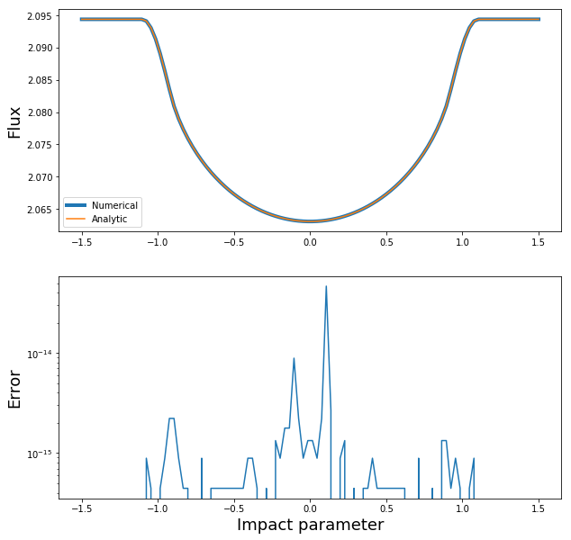

Note
This tutorial was generated from an Jupyter notebook that can be downloaded here.
The Mandel & Agol (2002) \(\Lambda\) function¶
Validation of the \(\Lambda\) function for linearly limb-darkened transits¶
Let’s import some stuff and define the numerical integral of a linearly limb-darkened source. We use scipy’s dblquad function to compute the integral of \(\sqrt{1 - x^2 - y^2}\) over the unocculted region of the source.
[20]:
import numpy as np
from mpmath import ellipe, ellipk, ellippi
import matplotlib.pyplot as pl
from scipy.integrate import dblquad
%matplotlib inline
def NumericalFlux(b, r):
"""Compute the flux by numerical integration of the surface integral."""
# I'm only coding up a specific case here
b = np.abs(b)
if b >= 1 + r:
return 2 * np.pi / 3
elif b <= r - 1:
return 0
# Total flux
total = (np.pi / 6) * (6 - 2)
if b >= 1 + r:
return total
# Get points of intersection
if b > 1 - r:
yi = (1. + b ** 2 - r ** 2) / (2. * b)
xi = (1. / (2. * b)) * np.sqrt(4 * b ** 2 - (1 + b ** 2 - r ** 2) ** 2)
else:
yi = np.inf
xi = r
# Specific intensity map
def I(y, x):
return np.sqrt(1 - x ** 2 - y ** 2)
# Lower integration limit
def y1(x):
if yi <= b:
# Lower occultor boundary
return b - np.sqrt(r ** 2 - x ** 2)
elif b <= 1 - r:
# Lower occultor boundary
return b - np.sqrt(r ** 2 - x ** 2)
else:
# Tricky: we need to do this in two parts
return b - np.sqrt(r ** 2 - x ** 2)
# Upper integration limit
def y2(x):
if yi <= b:
# Upper occulted boundary
return np.sqrt(1 - x ** 2)
elif b <= 1 - r:
# Upper occultor boundary
return b + np.sqrt(r ** 2 - x ** 2)
else:
# Tricky: we need to do this in two parts
return np.sqrt(1 - x ** 2)
# Compute the total flux
flux, _ = dblquad(I, -xi, xi, y1, y2, epsabs=1e-14, epsrel=1e-14)
# Do we need to solve an additional integral?
if not (yi <= b) and not (b <= 1 - r):
def y1(x):
return b - np.sqrt(r ** 2 - x ** 2)
def y2(x):
return b + np.sqrt(r ** 2 - x ** 2)
additional_flux, _ = dblquad(I, -r, -xi, y1, y2,
epsabs=1e-14, epsrel=1e-14)
flux += 2 * additional_flux
return total - flux
Now we define the analytic functions in the paper:
[ ]:
def s2(b, r):
"""The flux during the occultation."""
b = np.abs(b)
if b >= 1 + r:
return 2 * np.pi / 3
elif b <= r - 1:
return 0
return 2 * np.pi / 3 * (1 - 3 * Lambda(b, r) / 2 - int(r > b))
def Lambda(b, r):
"""The Mandel & Agol (2002) Lambda function."""
ksq = (1 - r ** 2 - b ** 2 + 2 * b * r) / (4 * b * r)
if ksq < 1:
f1 = 1. / (9 * np.pi * np.sqrt(b * r))
f2 = ((r + b) ** 2 - 1) / (r + b)
f3 = -2 * r * (2 * (r + b) ** 2 + (r + b) * (r - b) - 3)
f4 = 3 * (b - r)
f5 = -4 * b * r * (4 - 7 * r ** 2 - b ** 2)
K = float(ellipk(ksq))
E = float(ellipe(ksq))
PI = float(ellippi(ksq * (b + r) ** 2, ksq))
return f1 * (f2 * (f3 * K + f4 * PI) + f5 * E)
else:
f1 = 2. / (9 * np.pi)
f2 = 1 - (r + b) ** 2
f3 = np.sqrt(1 - (b - r) ** 2)
f4 = 3 * (b - r) / ((b + r) * np.sqrt(1 - (b - r) ** 2))
f5 = -np.sqrt(1 - (b - r) ** 2) * (4 - 7 * r ** 2 - b ** 2)
K = float(ellipk(1 / ksq))
E = float(ellipe(1 / ksq))
PI = float(ellippi(1 / (ksq * (b + r) ** 2), 1 / ksq))
return f1 * (f2 * (f3 * K + f4 * PI) + f5 * E)
Let’s compare the two for a simple transit:
[22]:
r = 0.1
b = np.linspace(-1.5, 1.5, 100)
sol1 = np.array([NumericalFlux(b[i], r) for i in range(100)])
sol2 = np.array([s2(b[i], r) for i in range(100)])
[27]:
fig, ax = pl.subplots(2, figsize=(10, 10))
ax[0].plot(b, sol1, lw=4, label='Numerical')
ax[0].plot(b, sol2, label='Analytic')
ax[1].plot(b, np.abs(sol1 - sol2))
ax[1].set_yscale('log')
ax[0].legend();
ax[1].set_xlabel('Impact parameter', fontsize=18);
ax[0].set_ylabel('Flux', fontsize=18);
ax[1].set_ylabel('Error', fontsize=18);

Note that the error is mostly due to the numerical integration!
■